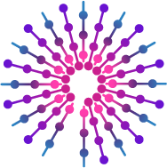

0. Start
1. Intro
2. Groups
3. Light
4. Dark
5. Experiment
ASDF loaded from index.html
Swimming in the Dark
A simulation of fish schooling behavior
This Simulation Connects to Part 4 of GP's "Animal Collective" Lesson